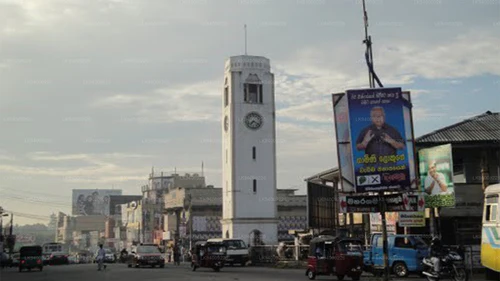
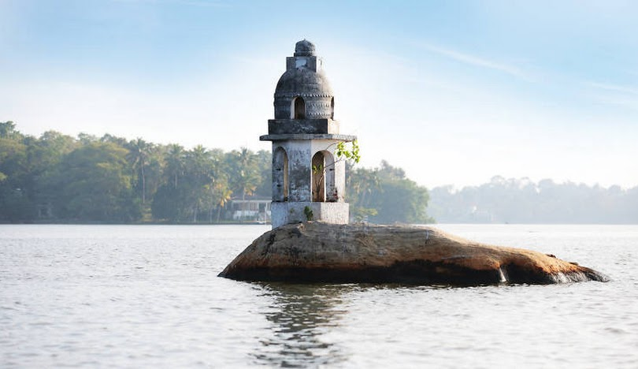

Piliyandala is a suburb in Colombo, Sri Lanka. It is situated approximately 18 kilometres (11 mi) south of Colombo. It is one of the relatively more populated suburbs located in the Colombo District of the Western Province, Sri Lanka and it is surrounded by the suburbs of Moratuwa, Kesbawa, Maharagama, Pannipitiya, Bandaragama and Kahathuduwa. Piliyandala has a thriving market in the town centre (next to the clock tower) and the Kesbewa Urban Council is also located in Piliyandala.
Colombo is the commercial capital and largest city of Sri Lanka by population. According to the Brookings Institution, Colombo metropolitan area has a population of 5.6 million and 752,993 in the Municipality. It is the financial centre of the island and a tourist destination. It is located on the west coast of the island and adjacent to the Greater Colombo area which includes Sri Jayawardenepura Kotte, the legislative capital of Sri Lanka, and Dehiwala-Mount Lavinia. Colombo is often referred to as the capital since Sri Jayawardenepura Kotte is itself within the urban/suburban area of Colombo. It is also the administrative capital of the Western Province and the district capital of Colombo District. Colombo is a busy and vibrant city with a mixture of modern life, colonial buildings and monuments.
The Western Province is one of the nine provinces of Sri Lanka, the first level administrative division of the country. The provinces have existed since the 19th century but did not have any legal status until 1987 when the 13th Amendment to the Constitution of Sri Lanka established provincial councils. Western Province is the most densely populated province in the country and is home to the legislative capital Sri Jayawardenepura Kotte as well as to Colombo, the nation's administrative and business center.
 